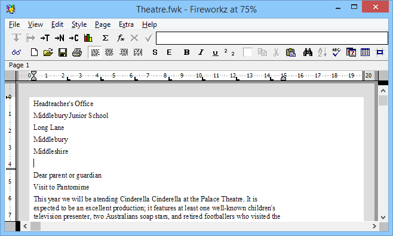
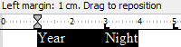

4 First steps in word processing
This chapter will show you how to perform the most essential word
processing tasks with Fireworkz. You will learn how to enter and correct text
using the keyboard and how to use Fireworkz' toolbar buttons, ruler and menus to
format and manage your text.
Even if you are an experienced word processor and computer user, you should
work through the exercises which follow to see the best way to perform these
tasks in Fireworkz.
Topics covered include:
- Loading a document;
- Getting ready to type by placing the caret within the document;
- Entering and correcting text;
- Moving text around the document using the Cut, Copy and Paste buttons;
- Using the Fireworkz ruler to change margins and indent a paragraph;
- Using the justification buttons to position your text;
- Using the Style button to create a heading;
- Printing your document.
When you have completed this part of the
tutorial you will be fully equipped to create and produce simple documents
using Fireworkz, and ready to proceed to the next chapter.
Loading a document
You will be working on one of the documents supplied in the Tutorial directory.
-
Find the Tutorial directory using File Explorer.
This directory should be in the Examples directory
that you should already have downloaded and extracted.
-
Find the file named Theatre and double-click it to start
Fireworkz and open that document.
If you are displaying file extensions in File Explorer,
it will be appear as Theatre.fwk.
-
The following window will appear on your desktop:

Changing your view of the document
Changing the window size
When the window appears initially, it will occupy only part of the screen.
To make the window as large as possible point to the Maximise button
near the top right-hand corner of the window and click on it.
The window will enlarge to cover all or most of the screen area.
You may, at some other stage, wish to make your window smaller; for example to view other windows at the same time.
To do this, point to the Restore Down button near the top right-hand corner of the window and click on it.
Changing the scale at which you view the document
Unless you have an extremely large monitor, you won't be able to see
all of your document at once on screen.
Only a portion of it will be visible in the window.
For some types of work, such as editing text, you might prefer a close-up
view of part of the document. For others, such as checking that the whole
document conforms to the style you have chosen and looks good, you will want to
check the whole document at once, and a reduced size which enables you see it
all at once on screen is appropriate.
If you have a large monitor, you can keep two or more views open
simultaneously, one at 100% and another at a smaller size such as 50%,
although this slows down the redrawing of the screen.
Changing the scale
To change the way in which the document is presented on screen, Ctrl-click the
View button at the
far left of the toolbar.
The
View Scale dialogue box will appear.
Look at the group of buttons entitled
Scale.
There are several choices available to you:
-
To see a scaled-down version of the document, click the
50% button and then click the
Apply button.
-
Type in a percentage value, or use the arrows to increase or decrease the
value shown in the box, then click the
Apply button.
-
To see the biggest version of the document that will fit across your screen,
click the
Fit Horz button and then click the
Apply button.
This will shrink or expand the view so that you see one complete page across
the screen.
You will probably find it easiest to edit text with the largest scale that
shows you a full line of text on the screen. Equally, you will sometimes want
to scale down your view of a document so that you can see a whole page on
screen at once, to check the overall formatting before printing.
Moving around the document
Changing the visible portion of the document
While you are typing, Fireworkz will always keep the caret on screen, so if
you are simply typing continuous text you will only need to do this if you want
to go and look at a part of the document which has scrolled off the screen.
Moving the caret around
You can move the caret around the document in several ways:
Entering and editing text
The simplest and most important word processing task is typing the text
into the document.
Entering text
Adding text to a paragraph
To put new text in a particular part of a document, you first need to place
the caret there.
-
Use the mouse to move the pointer to the start of the paragraph beginning
‘This year…’.
-
When you are pointing at the exact place you want to insert text, click
the left button.
-
You are ready to start typing. Enter the following text:
As you will realise, the annual school trip to the
pantomime is almost upon us.
Only enter the words, punctuation marks and spaces and do not press
Enter↵ at the end of lines; if a new line is
needed within a paragraph Fireworkz will automatically begin one.
-
Type a space after the full stop so that there is a single space between
the full stop and the beginning of the next sentence.
Starting a new paragraph
To add a new paragraph you will need to start a new line.
- Position the caret at the end of the paragraph by pointing there with the mouse and clicking the left button.
-
Press
Enter↵ on the keyboard. The caret will move
to the left margin ready for you to enter the following text:
If you have not already paid for your child’s ticket,
please send £3 as soon as possible.
Moving text around the document
Some of the text in the letter is in the wrong order. It needs to be moved to the correct position by selecting, cutting and pasting it.
You use these buttons to perform these actions:
Selecting text to move
There are two ways to select areas of text. Try both and see which you
prefer.
The first way:
-
Point at the beginning of the text you want to select (in this case the
paragraph beginning ‘If you have…’.
-
Press and hold down the left mouse button while dragging the pointer to
the left edge of the start of the next paragraph (but make sure that you do not
actually select any of the text in the next paragraph). Dragging as far as the
start of the next paragraph ensures that you select the whole paragraph.
-
When you can see that the text you want to select is all highlighted,
release the mouse button to confirm the selection.
The second way:
-
Place the caret at the beginning of the paragraph you just entered,
‘If you have…’.
-
Point to the end of the paragraph, just after the full stop, and press the
Shift
key while clicking the left mouse button. The text between the two mouse clicks is now selected.
Note that when you have an area selected, the
Selection tool button on the toolbar
turns black. In addition, many of the buttons are no longer greyed out indicating that the operations that they perform are now available.
Cutting and pasting
To move the selected text, follow these steps:
-
 Click the
Cut tool button on the toolbar.
Your selected text will disappear from the document, but it is stored
internally by the computer. It will be remembered until you cut or copy
another piece of text, or quit Fireworkz.
Click the
Cut tool button on the toolbar.
Your selected text will disappear from the document, but it is stored
internally by the computer. It will be remembered until you cut or copy
another piece of text, or quit Fireworkz.
- Position the caret at the beginning of the line ‘Yours faithfully’.
-
Click the
Paste tool button on the toolbar.
The text will appear in the new position.
Correcting mistakes
Cutting enables you to remove text from a document but to keep a copy of it
internally for use elsewhere.
You can also do this by making a selection and then typing over it.
However you will often want to remove text and throw it away. You
do this by using the
Delete key.
Scroll up to the top of the document. Look at the text in the first
paragraph. You probably have already noticed that there are some mistakes and
repeated words in it.
Deleting a single character
The word ‘Australians’ should not have the final ‘s’. To delete it:
-
Position the caret just after the word Australians, either with the mouse or
using the arrow keys.
-
Press the
Delete key.
The unwanted character ‘s’ will be removed.
Deleting a word
In the first paragraph, the word ‘Cinderella’ is repeated by mistake.
To correct this:
-
Position the caret anywhere within one of the occurrences of the word
‘Cinderella’ by pointing there and double-clicking with the left mouse
button. The whole word will be selected and appear reversed out (i.e. white on black).
-
Press the
Delete key as before. The caret will now be in the space where the word was, with a space on either side of it.
-
Press the
Delete key again to remove the surplus
space.
Deleting a block of text
Further down the paragraph the words ‘and retired footballers who visited the school earlier this year for coaching sessions’ appear.
To remove these:
- Position the caret in front of the comma before the word ‘and’.
- Select the block of text ending just before the full stop. The selected text will appear reversed out (i.e. white on black).
-
Press the
Delete key. The words will disappear.
-
When you delete a block of text, you need to make sure that you do not
leave any double spaces between words. If necessary, press the
Delete key again to remove any spurious spaces.
Typing over a selection
If you simply want to replace text with different text:
-
Select the word(s) you want to replace. You can select anything from a
single character to the complete contents of the document.
- Type in the new word(s). The old text will disappear and the new text will appear in its place.
Note that simply typing over selected text will actually cut it.
Changing case
Sometimes you need to change the case of one or more words, changing the
letters from upper to lower case or vice versa, or adding initial capitals as
in a proper name.
In the sample document the heading needs to be changed to capital
letters:
- Select the heading paragraph ‘Visit to pantomime’.
-
Open the
sub-menu from the
menu and choose the
option.
- You will see that the selected text is now in upper case.
Formatting
The document which you have been working on has a very simple format.
It is now time to improve its look, by changing the justification, style,
fonts and effects used within it.
Justification
Different parts of the document need to be aligned differently on the
paper. The alignment of text in relation to the margins is called
justification. For example, the address is usually flush against the right
margin, headings are often centred so that they are in the middle of the
paper, and the main body of text is often printed so that it is flush against
both margins.
The letter you are working on requires use of each kind of justification.
At the moment all the paragraphs are left justified. The left-hand edge of
each line of text is next to the margin, but the right-hand side ends where
the last word finishes, producing a ragged right-hand edge.
Typesetters often refer to this as ‘ragged right’. This is the default
setting, which will appear in your documents if you do not explicitly choose
an alternative.
Choosing justification settings
Changing the justification of a paragraph of text is as simple as clicking
in it and then clicking on one of the four buttons in the justification
palette group on the toolbar, shown below:
-
Each button in the justification palette shows a rough guide to the way
your text will appear if you select it.
- The currently selected button appears to have been pressed in.
The following examples show you how to use justification in the sample
document.
Right justified - ragged left
- Select the five lines of text which form the address at the top of the letter.
-
Click the
Right justify tool button on the toolbar.
This is the second button from the right in the justification palette.
The text will move so that it is up against the righthand margin.
Centred
Centring is often used for headings and for documents with only a small
amount of text, such as posters and invitations.
-
Select the paragraph which heads the letter - the line of text which reads
‘VISIT TO PANTOMIME’.
-
Click the
Centre justify tool button on the toolbar.
This is the the second button from the left in the justification palette.
The text will move to the middle of the screen.
Changing the margin - using the ruler
You can use the ruler to change the margins of lines and paragraphs within
the document.
Indenting paragraphs
In the middle of the document Theatre are a set of dates.
These will stand out more if the paragraphs containing them are indented.
- Select the paragraphs beginning with ‘Year’ and ending with ‘Thursday’.
-
Point at the left margin marker, which is a small upwards-pointing
triangle in the ruler above the text. You will use this to indent the
paragraph. Note how the status line confirms your actions.

-
While pointing at the marker, and while it is moving, you will see that
the mouse pointer has changed to one with two horizontal arrows pointing to
either side.
-
Press and hold down the left mouse button and
drag the marker one centimetre to the right and then release the mouse button. You can check the measurements by looking where the marker is on the ruler and
also by reading the measurement on the status line.
- Release the mouse button and the paragraphs will be indented.
Note that the paragraph margin marker (the downwards-pointing arrow above
the left margin marker) moves with the left margin marker.
You can also move it separately.
Styles
One of the benefits of WYSIWYG (What You See Is What You Get)
word processing is that it enables you to
experiment with styles and change the look of your document without having to
print it out to see the results. Changing the style of text is easily accomplished with Fireworkz' buttons and menus.
Applying a style
The style of the main body of text in the letter you are editing looks fine
and does not need changing. However the heading could be made to stand out
more.
To change the style of the heading:
-
Select the text you want to change, in this case the paragraph
‘VISIT TO PANTOMIME’.
-
Click the
Style tool button on the toolbar. The
Styles dialogue box will appear.
-
Choose the style you want from the list by clicking on it.
In this case, choose the
Heading entry.
-
Click the
Apply button in the dialogue box.
-
The selected text will now appear in the chosen style.
Applying effects
Emphasis may be added to text using bold and italic forms of the letters.
If you have used a typewriter, you will be used to underlining words for
emphasis, or to show that they are the title of a work of art.
It has become conventional with word processors such as Fireworkz to use
italic letters to do this.
To put the name of the pantomime in italics:
-
Double-click on the word Cinderella in the first paragraph, so that it is
selected.
-
Click the
Italic tool button on the toolbar.
The word will appear in italics.
Checking your work
Everybody makes typing errors from time to time. To help you avoid making
mistakes, Fireworkz includes a spelling checker which will read your document
and query any words it thinks you might have spelt wrongly.
To check the spelling in this document:
-
If there is a current selection, clear it by clicking the
Selection tool button on the toolbar.
-
Choose from the
menu.
-
The spelling checker will initially pick up parts of the address
which are words that it does not recognise. Bypass these by clicking the
Next button in the dialogue box
which appears, until you come to the first real mistake, ‘atending’.
- The spelling checker will pick up the first spelling mistake and display the word ‘atending’ in the top field of the dialogue box.
-
Select the correct spelling -
attending - from the list of
suggested correct spellings, and click the
Replace button.
-
If there are any more spelling mistakes, correct them as the spelling
checker reports them to you.
Printing your work
The final phase in the production of most documents is printing them out,
and this is no exception.
- Ensure that you have installed and set up a printer driver on your system.
-
Click the
Print tool button on the toolbar.
- The Print dialogue box appears.
- You want to print one copy of the document, so there is no need to alter any of the settings in the dialogue box.
-
Click the Print button
and the document should be printed.
If there are any problems with printing, refer to the chapter on
Printing in the User Guide.
What you should do next
You should now be able to produce simple documents using Fireworkz and
understand the way the program’s various components work together to help you
write and format documents.
If you are still unsure of the basics, have another go at editing the
practice file. Try creating a new document using the Letter
template and write your own letter to practise editing.
If you are happy that you understand everything that you have learnt in this
chapter, go on to the next chapter where you will learn how to use Fireworkz'
more powerful features to improve the design and layout of your documents.